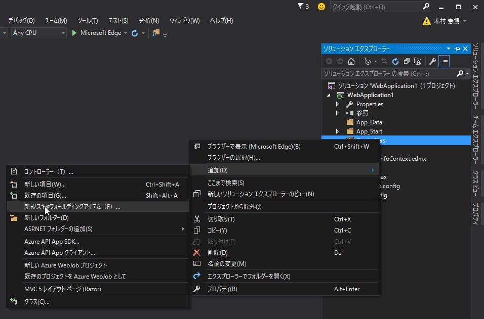
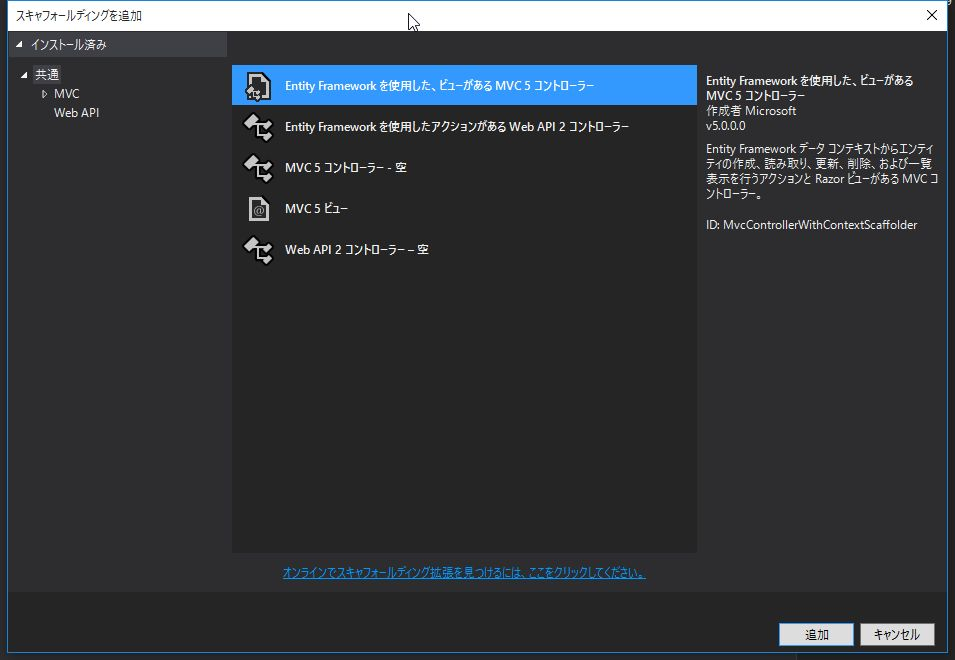
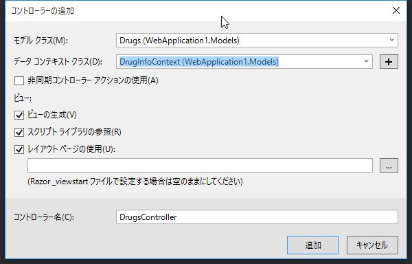

これまでの実装では、他画面に遷移した後に /Home/Index に戻ってくると、
検索結果が失われていました。
前回の検索結果を復元するように機能を追加します。
薬効分類のメンテナンス機能を追加します。
EntityFrameworkのデータベースファースト開発 によって
ClassificationsController と各ビューを自動生成します。
ソリューション エクスプローラー で Controllers を右クリック -> 追加 -> 新規スキャフォールディングアイテム を選択します。

Entity Framework を使用した、ビューがあるMVC5 コントローラー を選択し、追加 をクリックします。

モデル クラス に Classifications 、 データ コンテキスト クラス に DrugInfoContext を選択し、追加 をクリックします。

Models/ClassificationsMetadata.cs
using System.ComponentModel;
using System.ComponentModel.DataAnnotations;
namespace WebApplication1.Models
{
[MetadataType(typeof(ClassificationsMetadata))]
public partial class Classifications
{
}
public class ClassificationsMetadata
{
[DisplayName("薬効分類ID")]
public int ClassificationId { get; set; }
[DisplayName("薬効分類コード")]
[Required(ErrorMessage = "薬効分類コードは必須項目です。")]
[StringLength(3, ErrorMessage = "薬効分類コードは3桁で入力してください。")]
public string ClassificationCode { get; set; }
[DisplayName("薬効分類")]
[Required(ErrorMessage = "薬効分類名称は必須項目です。")]
public string Name { get; set; }
}
}
ナビゲーションバーに薬効分類の一覧へ遷移するリンクを追加します。